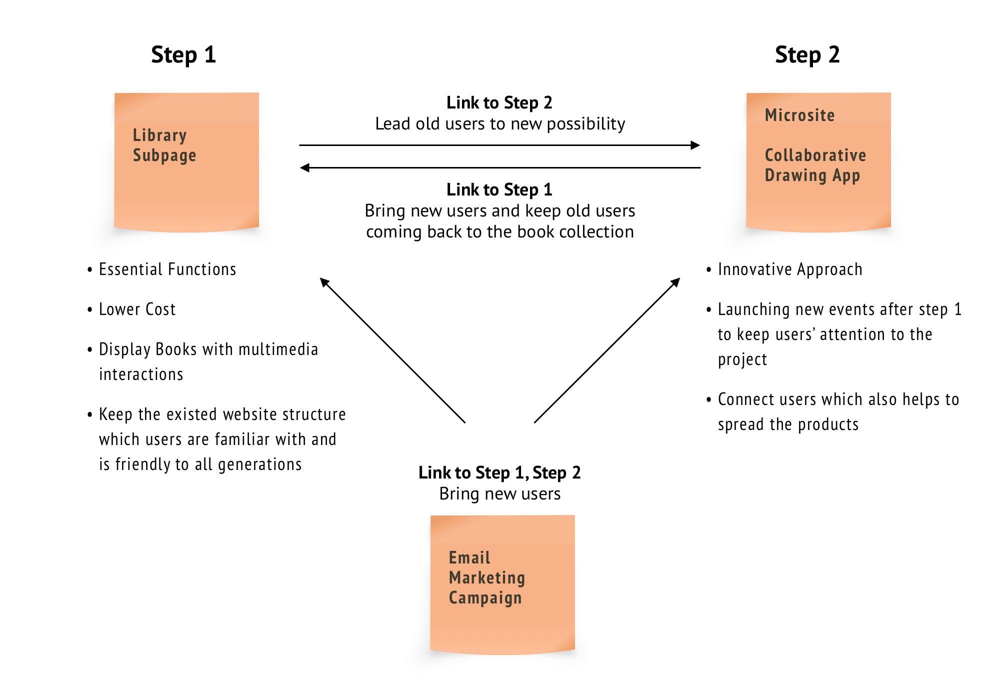
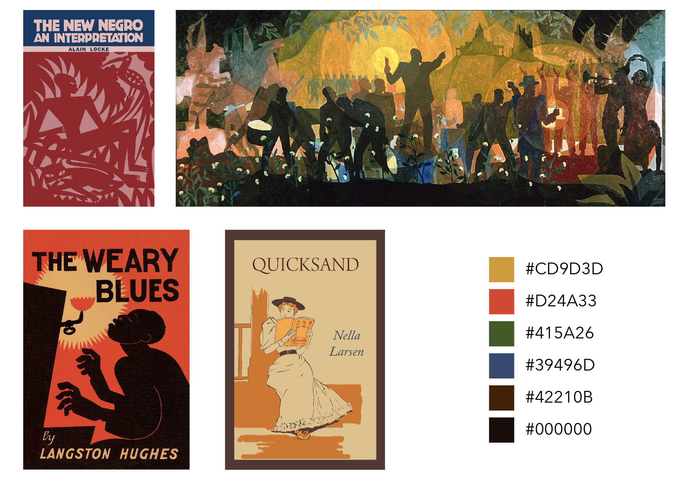

Online Book Display - Classics of the Harlem Renaissance
» Work @Teachers College Columbia University
» Role: Visual/Concept Designer & Front End Development
» Collaboration: TC Librarians, Develop Team
» 2020 March - April
» Collaborative Drawing App
» GitHub Code
» Gottesman Libraries Website
Classics of the Harlem Renaissance is a special digital book display in celebration of the 100th anniversary of the Harlem Renaissance. It seeks to help audiences understand not only African American history and culture, but the Harlem Renaissance as a significant step towards the American ideal of freedom and opportunity.
The design is to provide innovative solution to promote the curated Gottesman Libraries Book Colletion in a short time, when the scheduled onsite display and events were postponed in light of the COVID-19 outbreak.
I led the concept development, design and front-end/creative code development. The project includes web multimedia interactions, a collaborative drawing app, and email marketing campaign.
Main Tools
Web Design | HTML&CSS | JavaScript | Node.js | Socket.IO | Illustration
Concept Development
User Research
» Targeting Audience: Teachers College students, faculty, and alumni and broader community in education industry
» Big range of user generations: From Baby Boomer, who are still learning digital tools, to Gen Z, who are mostly digital natives
Platforms Study
Contraints:
» Gotteman Libraries has its own CMS. The page style, UI components and layout of any new webpage needed to comply with the existed structure.
» College needs to dealt with many unexpected changes in face of the COVID-19 crisis, which makes it slower to process new approaches.
Opportunities:
» Users stay on digital platforms more often and are more willing to accept new products during the special time
» People have stronger desire to connect with each other and to be seen than usual. The digital platform can provide more space for users to create, customize and collaborate with others.
Solution
WHAT IF
launching multiple products in different steps
TO
gradually help users who are not familiar with technoloy to get comfortable with the interactions.
and keep them coming back to the book collection.

Visual System
Color Study
Visual Style Study
Interaction and Responsive Design
While hover/mouseover is a more intuitive interaction on desktops, it is not very accessible on touchscreens. Thus, the "Flip" button is designed to deliever to same fun.
Link
The book display can be checked at Gottesman Library Website.